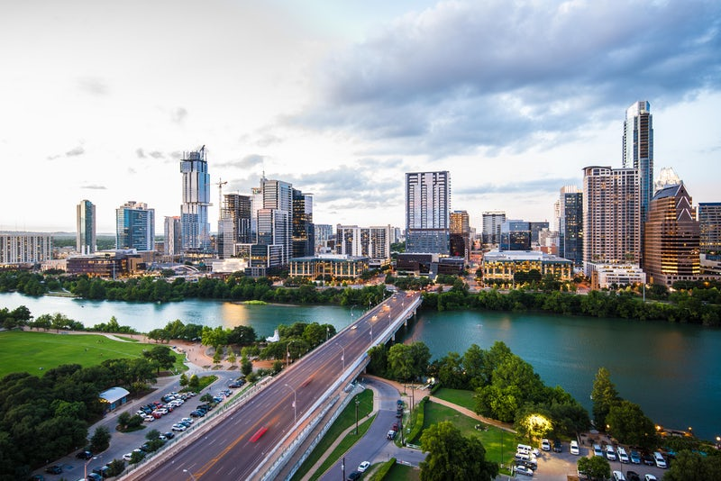
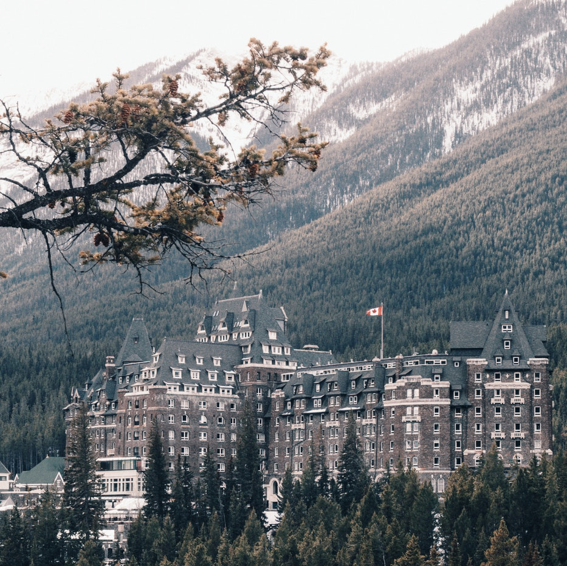
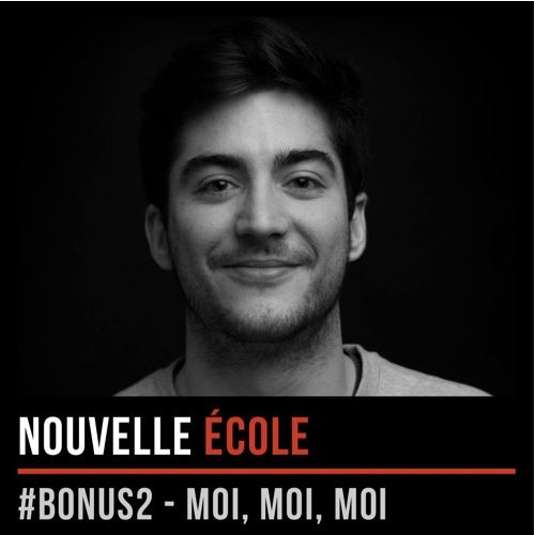
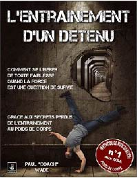

Mes Voyages!
Ces dernières années j'ai pas mal voyagé pour le plaisir! J'ai notemment bien amélioré mon niveau d'anglais qui était pour le moins ... médiocre. J'ai passé trois mois au USA en passant par le Texas connu pour ses ranchs et les cowboy. Le Colorado pour la purple weed et ses montagnes enneigées. L'Illinois réputé pour ses grands lacs, l'Idio le pays de la patate et enfin la californie connue pour... plein de super choses!
Je peux aussi vous conseiller si vous avez des idées de voyage de partir au Canada. Nos chers consins à l'accent très particulier vous accueillerons à bras ouvert. Mais attention ne leurs dites pas en face qu'ils ont un drôle d'accent car il vous répondrons que c'est vous qui avez un drôle d'accent!
Mes Projets (innachevés...)
|
Après ce voyage aux USA j'ai remarqué un engouement pour le made in France dans ce pays et j'ai voulu partager l'artisanat français (plus en particulier la maroquinerie) avec les américains. Malheureusement le projet n'étais pas assez solide... Mais vous pouvez retrouver le site des artisants engagés ci-dessous. HandBags Made In France |

|
|
|
Un autre projet que j'ai commencé un peu par défis c'est ma chaîne youtube. Sans vraiment de but précis, je parle de mes réflexions du moment ainsi que de mes lectures. Je n'étais pas vraiment à l'aise mais c'est un bon exercice pour prendre confiance en soi. Quelle sera la prochaine étape?... Je pense que je vais me mettre à écrire des articles. Ma chaîne Youtube |
|

|
Mon podcast préféré!J'ai découvert Antonin Archer il y a maintenant 6 mois et vraiment je suis devenu accro à son podcast. J'adore le concept et sa vision des choses, le principe de ce podcast c'est de discuter avec des personnes qui font les choses différement. Qui avance dans la vie en prenant les chemins de traverses et qui portent un regard différent sur le monde. D'ailleurs c'est grâce à lui que j'ai découvert Le Wagon. Il a interviewé Boris Paillard dans son premier épisode. Franchement allez écouter. |
Mes sportsJ'ai pendant de nombreuses années fait de l'athlétisme, je vais pas vous mentir à le fin j'y allais que pour les filles! Dans ce sport il y a plein de filles en tout cas dans mon club oui. J'ai pas mal couru et j'ai aussi fait du lancé de javelot. J'ai remporté quelques médailles lors de compétition régionnales. Mais ce dont je veux vous parler ici c'est la calisthenics! Je pratique cette discipline de musculation poid du corps depuis 2 ans maintenant et je kiff ça c'est vraiment le kiff. Je mix mes entrainements avec de la corde à sauter et ça fait un entrainement complet. Je vous conseil pour apprendre cette discipline le livre de Paul Wade qui est complet et vous fait progresser sans blessure. |

|